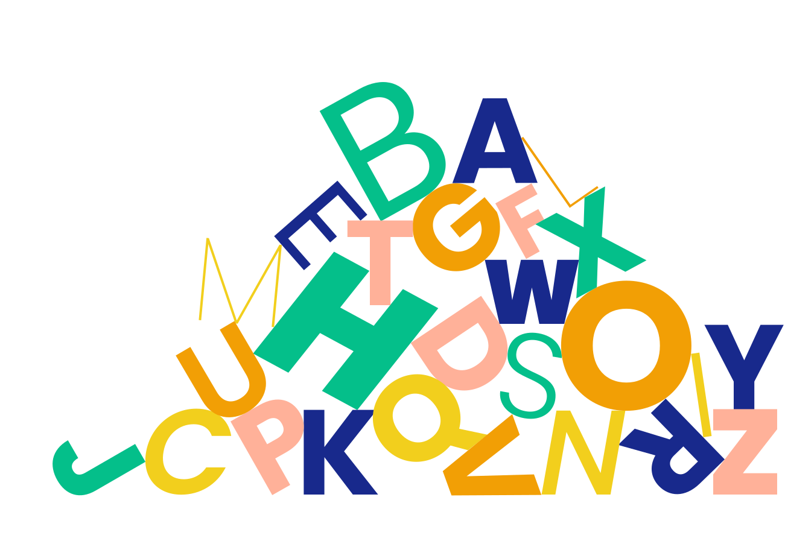

Poppins’s letters are practically monolinear, although optical corrections have been applied to stroke joints where necessary, to maintain an even color in text.
The lowercase “p” in the Poppins typeface has a thicker round edge. The cutout of the “p” aligns with the stem instead of being centered which is what creates this distict look. The “p” looks like it is a perfect circle at first glance, but a closer look shows that is is not the same thickness all around.
The lowercase “g” shares many of the same characteristics of the “p”, and it also exemplifies the overshoot many of the rounded characters have in Poppins. The lowercase “g”is also missing the loop which gives the glyph a clean, modern look.
There is a voice inside of you
that whispers all day long,
'I feel that this is right for me,
I know that this is wrong.'
No teacher, preacher, parent, friend
or wise man can decide
what's right for you - just listen to
the voice that speaks inside.